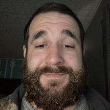

About
The person I have interviewed is Matthew Krutsick. Matthew Krutsick was born on December 28th, 1988 in Allentown, Pennsylvania. Matthews favorite hobbies are offroading because of his love for Jeeps and working on them, programming because he took a programming class and when he was introduced to the “hello world” example that was what sparked his interest and snowboarding because he was intrigued by professional athletes like Shaun White, and he picked it up quickly and has no interest in skiing. His goals are he graduated from Bloomsburg University, be successful, and travel the world. He looks up to Elon Musk as his role model. His favorite fast food eatery is Mcdonalds. The best vacation that he has been on was to the country of Mexico, because it was for his honeymoon. His biggest pet peeve is being on time because it’s embarrassing to be late. His biggest accomplishment was graduating from Bloomsburg University in computer science in 2011. If Matthew could go back in time, he would travel to the year 1400 because he is a fan of the medieval times. The number one thing that he will never do ever again is bridge jump into a river. Matthews most favorite movie of all time is Shawshank Redemption because it had a great storyline and how it would keep you on your toes because of the plot twists. The funniest thing he has ever seen is Dave Chapelle doing stand up comedy. Finally, the craziest thing that Matthew has ever done was bridge jumping when he was in college.